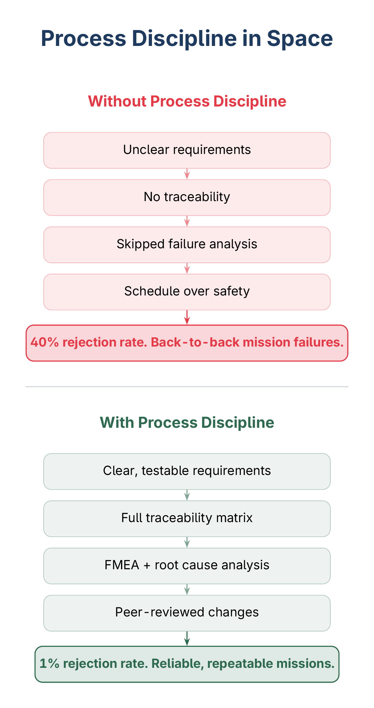

Process Discipline in India's Space Sector
India's space sector has over 400 companies and $726 million in venture funding. We are building rockets and satellites. But are we building the processes that make them work?
I read a detailed piece recently about how Indian satellites are essentially assembled from imported subsystems – French attitude control, European optics, German solar cells. The argument was that India needs to build component-level manufacturing capability. I agree. But I think the article missed something fundamental.
Hardware alone does not make missions succeed. Processes do.

What Went Wrong with PSLV
Consider what happened with PSLV-C61 and C62. Two consecutive failures, both at the same third stage. C62 launched before C61's failure analysis was even complete. The failure analysis committee report was kept internal. No external peer review of corrective measures.
This is not a hardware problem. This is a process problem – risk management, quality assurance, and return-to-flight criteria that were either inadequate or bypassed under schedule pressure.
What Went Right with Eon Space Labs
Now look at the other side. The Swarajya article mentions Eon Space Labs, which reduced its rejection rate from 40% to 1%. That is not just better machining. That is quality management – process control, inspection protocols, root cause analysis on every defect, and continuous improvement cycles.
The difference between 40% and 1% is not a hardware upgrade. It is a process upgrade.
How NASA and Aviation Got It Right
NASA did not become reliable because it had better engineers than everyone else. It became reliable because it built NPR 7123.1 – a systems engineering framework where every requirement is traceable from mission objective down to individual component test. Every change triggers impact analysis. Every risk is identified, tracked, and mitigated before it becomes a failure.
DO-178C in aviation works the same way. You cannot certify airborne software without proving that every requirement has a corresponding test, every test has a result, and every change is traceable. The process is the product.
These are not bureaucratic exercises. They are the reason planes do not fall out of the sky and Mars rovers land where they are supposed to.
The Layer India's Startups Are Skipping
India's space startups are mostly skipping this layer. When you are racing to launch, requirements management feels like overhead. Traceability matrices feel bureaucratic. Failure Mode and Effects Analysis feels like something large companies do.
Until two consecutive missions fail at the same stage.
The boring work – writing clear requirements, maintaining traceability, running FMEA, building test matrices, doing peer reviews – is what separates a successful space program from an expensive one. It is what separates a 1% rejection rate from a 40% one.
What We Actually Need
We talk about building indigenous hardware capability. Agreed. But we also need indigenous process capability. The frameworks exist. The tools exist. What is missing is the recognition that process discipline is not overhead – it is the foundation.
The next chapter of India's space story will not be written by those who build the most hardware. It will be written by those who build the most reliable systems. And reliability is a process outcome, not a hardware accident.